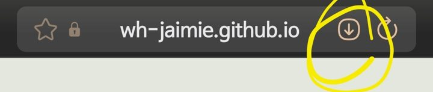
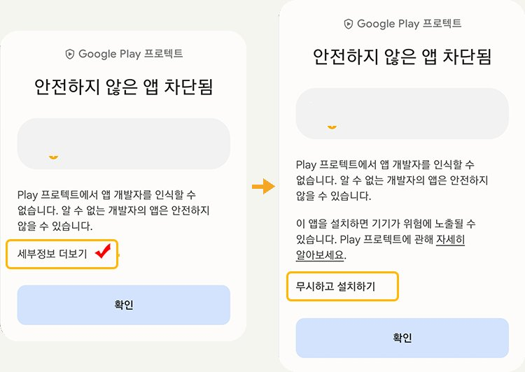

1분이면 끝나요. 스터디 자료·기록·공지를 여기서 봐요.
나이테 스터디 앱은 스토어에서 받는 앱이 아니라, 인터넷 주소를 홈 화면에 추가해서 쓰는 앱이에요. 스토어에서 검색하지 말고 아래 순서대로 해 주세요. 무료이고 용량도 거의 차지하지 않아요.
채팅방 공지의 링크를 누르면 카카오톡 안에서 열려요. 카카오톡 안에서는 설치가 안 되니 휴대폰 기본 인터넷 앱으로 다시 열어 주세요.


나이테 스터디는 스토어에 올린 앱이 아니라서, Google Play 프로텍트가 ‘개발자를 알 수 없다’고 경고해요. 나이테 주소(wh-jaimie.github.io)에서 설치할 때만 이렇게 해 주세요. 걱정되면 아래 메뉴의 홈 화면에 추가로 해도 돼요(경고 없이 아이콘이 생겨요).홈 화면에 생긴 나이테 스터디 아이콘을 눌러 열면 바로 시작이에요.
아이폰은 사파리와 홈 화면 앱의 기록이 따로 저장돼요. 기록은 홈 화면 아이콘으로 열어서 해 주세요. 📲 스터디 앱 열기스토어에 올린 앱이 아니라서 검색에 나오지 않아요. 위 순서대로 인터넷 주소를 홈 화면에 추가하면 앱처럼 쓸 수 있어요.
대부분 카카오톡 안에서 열려 있을 때예요. ①번처럼 사파리(아이폰)나 크롬(안드로이드)으로 다시 열어 주세요.
아니요. 스터디 앱은 누구나 쓸 수 있어요. 함께 인증하고 응원을 나누고 싶다면 스터디방 참여 안내를 봐 주세요.
앱의 기록하기 탭 아래 기록 백업에서 닉네임과 숫자 4자리를 정해 두면, 새 폰에서 이어보기로 그대로 이어 볼 수 있어요.
스토어에 올린 앱이 아니라서 Google Play 프로텍트가 개발자를 알 수 없다고 띄우는 경고예요. 나이테 주소(wh-jaimie.github.io)에서 설치한 경우라면 세부정보 더보기 → 무시하고 설치하기를 누르면 돼요. 걱정되면 브라우저 메뉴의 홈 화면에 추가로 아이콘만 만들어도 똑같이 쓸 수 있어요.
링크로 열어도 볼 수는 있어요. 다만 매번 링크를 찾아야 하고, 아이폰은 기록이 따로 저장될 수 있어서 설치해 두는 걸 추천해요.
나이테 영어책육아 메이트 · 한 권씩, 아이의 영어에 나이테를 만들어요.